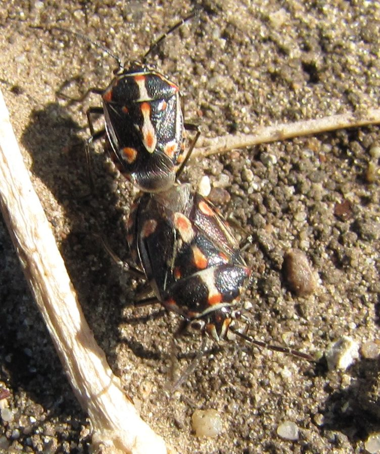

रंगीन बगPainted Bug
Bagrada hilaris · Pentatomidae · INS-0043

- Scientific name
- Bagrada hilaris (Burmeister, 1835)
- Family
- Pentatomidae
- Hindi
- रंगीन बग
- Status here
- naturalized
- IUCN
- not evaluated
When to look कब देखें
Expected mainly in October, November, December, January, February, March.
रंगीन बग / Painted Bug
Bagrada hilaris (Burmeister, 1835) — Pentatomidae
रंगीन बग (सरसों का खटमल / बाग्राडा बग) — पूर्वी उत्तर प्रदेश के सरसों के खेतों और शीतकालीन सब्जियों (जैसे पत्तागोभी और फूलगोभी) में पाया जाने वाला एक छोटा, आकर्षक और हानिकारक ढाल-नुमा कीट है। यह पक्षी-पंख या ढाल जैसी आकृति वाला छोटा खटमल होता है, जिसकी लंबाई केवल 5-7 मिमी होती है। इसके काले शरीर पर नारंगी-लाल और सफ़ेद रंग की सुंदर धारियाँ और धब्बे (striking black, orange-red, and white markings) बने होते हैं, जिसके कारण इसे 'रंगीन बग' कहा जाता है। इसके प्रौढ़ (adults) और शिशु (nymphs) दोनों अपनी तीखी सूई जैसी चोंच से सरसों के पत्तों, तनों और फलियों का रस चूसते हैं, जिससे पत्तियां पीली पड़कर सफेद हो जाती हैं और फलियां सिकुड़ जाती हैं। यह अक्टूबर-नवंबर में सरसों की बुआई के तुरंत बाद भारी संख्या में प्रकट होता है।
Quick Identification त्वरित पहचान
| Feature | Description |
|---|---|
| Size | Very small, shield-shaped bug; body length around 5–7 mm (about half the size of the Green Stink Bug) |
| Colouration | Glossy black overall, marked with a central orange stripe on the head and scutellum, and orange and white spots on the body margins |
| Feeding damage | Leaves show tiny, white spots at feed sites; heavily damaged leaves shrivel and look burnt ("bagrada burn") |
| Nymphs | Small, rounded, orange-red at first, gradually developing black patches as they grow |
| Seasonality | Appears suddenly in massive numbers during winter, especially when mustard crops are young |
Field tip: Look closely at young mustard seedlings in October or November. Watch for tiny black-and-orange shield-shaped bugs crawling on the leaves. If the leaves have white speckles and the seedlings are shriveling, it is Painted Bug damage. The female is larger than the male and is shown in the field tip.
Morphology आकारिकी
Biometrics (typical measurements in the northern Indian plains):
| Stage / Part | Measurement |
|---|---|
| Adult female length | 6–7 mm |
| Adult male length | 5–6 mm |
| Adult body width | 3–4 mm |
| Egg length | 0.8–1.0 mm |
| Weight (adult) | 10–20 mg |
Adult Bug: The body is oval, flat-backed, and shield-shaped. The base color is glossy black. It has a central orange-red stripe running down the middle of the head, pronotum, and scutellum. The lateral margins of the body have a row of orange and white spots. The legs are short, black, with yellow markings. The antennae are 5-segmented and black.
Egg: Small, barrel-shaped, creamy-white when laid, turning orange before hatching. Females lay them singly or in small groups on leaves, stems, or in the loose soil near the base of host plants.
Behaviour & Ecology व्यवहार और पारिस्थितिकी
- Sap-sucking habit: Both adults and nymphs feed by piercing the plant tissue with their stylets, injecting saliva to digest plant cells, and sucking out the sap. This stops the growth of young seedlings.
- Aggregative feeding: They gather in large numbers on a single plant, combining their feeding efforts to weaken the host seedling quickly.
- Soil hiding: During cold winter nights, adults and nymphs crawl down the host plant and hide in the cracks of the dry soil or under fallen leaves, emerging onto the crop once the sun warms the field in the morning.
Life Cycle / Phenology जीवन चक्र
- Reproduction: Multivoltine (produces 3 to 4 generations during the winter crop cycle in UP).
- Oviposition: Females lay eggs in the soil or on leaves, laying up to 100–150 eggs in her lifetime.
- Developmental times (during winter at 20–25°C):
- Egg incubation: 5 to 8 days.
- Nymphal period (5 instars): 20 to 30 days.
- Adult lifespan: 20 to 40 days.
Host Plants or Prey आहार
Primary crop hosts:
- Cruciferous crops: Mustard (Brassica juncea), cabbage, cauliflower, radish, and turnip.
- Weeds: Wild mustard (Brassica nigra) and shepherd's purse.
Predators / Natural Enemies शत्रु
- Predators: Ladybird beetles (Coccinella transversalis), green lacewings, and small ground spiders prey on the soft nymphs.
- Birds: Small insectivorous birds (like the Zitting Cisticola Cisticola juncidis and Plain Prinia) feed on adults and nymphs found on plant leaves.
Agricultural / Human Relevance कृषि प्रासंगिकता
Major winter crop pest. The Painted Bug is a significant threat to mustard cultivation in eastern UP. An infestation during the early seedling stage can kill the young plants, forcing farmers to sow the field again, which increases costs and reduces yield.
Control methods: Farmers in Basti manage them by:
- Sowing mustard early in October to avoid the peak bug populations in November.
- Irrigating the field, which floods the soil cracks and drowns hiding bugs.
- Spraying chemical pesticides (such as malathion or dimethoate) on young seedlings if bug counts are high.
Expected Locally स्थानीय रूप से अपेक्षित
Not a field record. Written from published accounts for eastern Uttar Pradesh. No confirmed local sighting yet — if you have seen it, that is what the atlas needs.
अभी तक स्थानीय पुष्टि नहीं। यह विवरण प्रकाशित स्रोतों से है, किसी अवलोकन से नहीं।
A common winter pest throughout the Basti district, especially in the extensive mustard-growing areas of the Harraiya and Basti blocks. Heavy infestations are regularly recorded in November when the mustard crop is in the vegetative phase. Farmers often report finding them hidden under dry soil clods during early mornings.
Distribution वितरण
Global range: Native to Africa and the Middle East; now naturalized and widespread across South Asia, southern Europe, and parts of the USA.
In India: Found in all major mustard-growing states, particularly in the northern plains.
In Uttar Pradesh: A major winter pest in all districts growing oilseed and cruciferous crops.
In Basti district / eastern UP: Widespread across all agricultural blocks.
Research Questions शोध प्रश्न
Anyone can investigate these | कोई भी इन प्रश्नों की जाँच कर सकता है
- How many Painted Bugs can be found on a single infested mustard seedling in November? — Count and record bug densities in different fields.
- Do Painted Bugs prefer feeding on Mustard leaves over Radish leaves in Basti? / क्या रंगीन बग मूली के पत्तों की तुलना में सरसों के पत्तों को खाना अधिक पसंद करता है? — Conduct choice experiments.
- Does early irrigation of the mustard field reduce the population density of Painted Bugs? — Compare bug counts before and after watering.
- How do ladybird beetle larvae interact with Painted Bug nymphs on a shared cabbage leaf? — Document predation events.
- Does the population count of Painted Bugs in Basti drop during the coldest winter weeks of January? / क्या जनवरी के सबसे ठंडे हफ्तों के दौरान बस्ती में रंगीन बग की आबादी कम हो जाती है? — Monitor weekly populations from November to February.
Similar Species मिलती-जुलती प्रजातियाँ
| Species | How to tell apart | हिंदी |
|---|---|---|
| Southern Green Stink Bug (Nezara viridula) | Much larger (12–15 mm); entirely grass-green; feeds on solanaceous crops | हरा खटमल — बड़ा आकार, चमकीला हरा शरीर |
| Red Cotton Bug (Dysdercus cingulatus) | Much larger; elongated red body with black wings and white bands; feeds on cotton | लाल सूती बग — बड़ा आकार, लंबा लाल शरीर |
| Transverse Ladybird Beetle (Coccinella transversalis) | Convex, rounded body (beetle); orange-red with black wavy bands; predator, lacks sucking beak | लेडीबर्ड बीटल — गोल शरीर, चोंच का अभाव, शिकारी |
Field rule: Very small, shield-shaped flat bug about 5–7 mm long, glossy black with orange and white spots, feeding on crucifers (mustard/cabbage), is the Painted Bug.
Taxonomy & Classification वर्गीकरण
Original description. Hermann Burmeister described the Painted Bug as Pentatoma hilaris in 1835 in his Handbuch der Entomologie (Vol. 2, Part 1, p. 368). The type locality was South Africa. It was later placed in the genus Bagrada by Stål. The genus name Bagrada is derived from the ancient name of a river in North Africa. The specific name hilaris is Latin for cheerful or lively, referencing its bright coloration.
Subspecies. Monotypic — no subspecies are currently recognised.
Family and order placement. Placed in the order Hemiptera, suborder Heteroptera, family Pentatomidae (shield bugs), subfamily Pentatominae.
Phylogenetic notes. Bagrada hilaris belongs to a group of dry-climate adapted pentatomids, exhibiting high tolerance to dry soils and heat.
IUCN status rationale. Not evaluated (NE) by the IUCN Red List. It is an abundant and secure agricultural pest.
Photo Gallery फोटो गैलरी
References संदर्भ
- Burmeister, H. (1835). Handbuch der Entomologie. Vol. 2, Part 1, p. 368. Berlin. [original description]
- Atwal, A. S. & Dhaliwal, G. S. (2015). Agricultural Pests of South Asia and Their Management. Kalyani Publishers, New Delhi.
- David, B. V. & Ramamurthy, V. V. (2016). Elements of Economic Entomology. Namrutha Publications, Chennai.
- McPherson, J. E. (2018). Invasive Stink Bugs and Related Species (Pentatomoidea). CRC Press, Boca Raton.
- CABI Crop Protection Compendium (2024). Bagrada hilaris (painted bug) datasheet.
- GBIF Occurrence Data — Bagrada hilaris, Uttar Pradesh (2010–2025).
Source file: species/fauna/insects/painted_bug.md